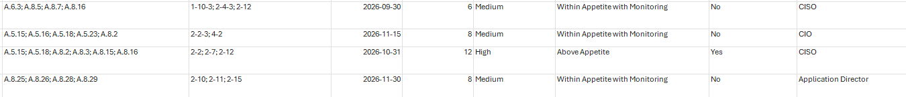
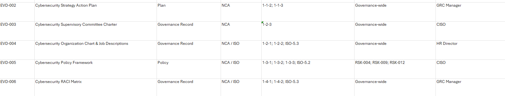
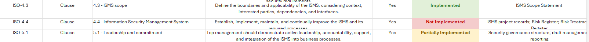
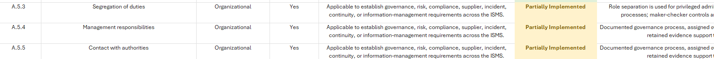
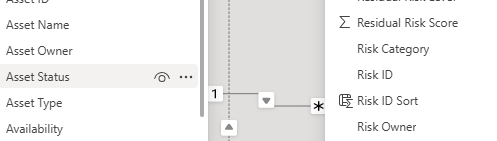
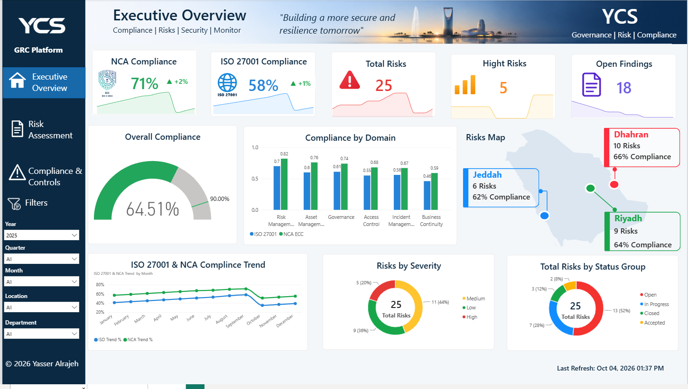
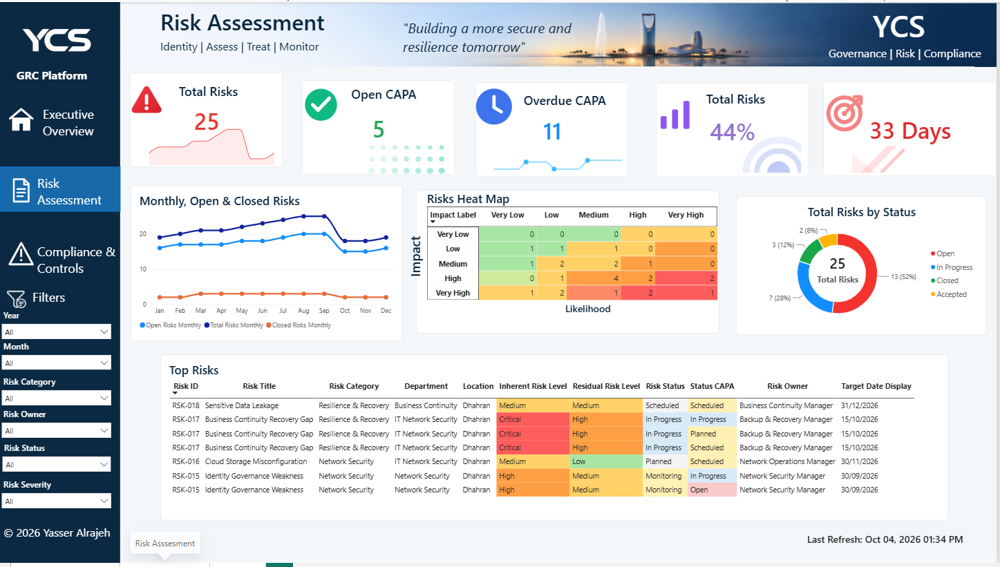
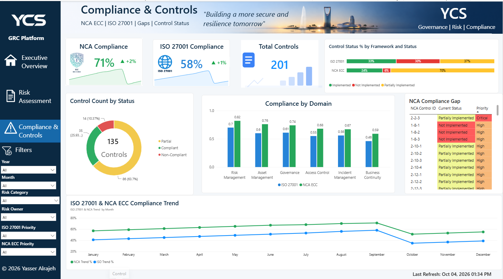

Project Overview
This project provides a consolidated view of organizational risk exposure, compliance performance, security controls, and remediation activities. The solution was designed around ISO/IEC 27001 and the NCA Essential Cybersecurity Controls (NCA ECC).
The work began with preparing and organizing the supporting GRC datasets in Microsoft Excel. In Power BI, I built the data model, established relationships between multiple tables, developed DAX measures and calculated logic, and designed three connected dashboards.
Excel Data Preparation
The data foundation was structured to support multiple areas of risk and compliance reporting rather than relying on a single flat dataset.
- Risk Register and Risk Assessment
- Risk Treatment and CAPA tracking
- Inherent and Residual Risk
- Risk Ownership, Departments and Locations
- ISO 27001 and NCA ECC control assessments
- Control implementation status and compliance gaps
- Evidence, priorities, target dates and trend data




Power BI Data Model & DAX
After preparing the datasets, I imported them into Power BI and built the reporting model. Relationships between multiple tables allow risk, treatment, control, compliance, organizational, and time-related information to work together across the solution.

1. Executive Overview Dashboard
Provides management with a high-level view of the organization’s overall GRC posture.
- NCA ECC and ISO 27001 compliance KPIs
- Total Risks, High Risks and Open Findings
- Overall compliance indicator and compliance by security domain
- Geographical risk and compliance view for Riyadh, Dhahran and Jeddah
- ISO 27001 and NCA ECC compliance trends
- Risk distribution by severity and status

2. Risk Assessment Dashboard
Provides a deeper operational view of the organization’s risk environment and remediation activities.
- Total risk and CAPA indicators
- Open and overdue CAPA monitoring
- Monthly open, total and closed risk trends
- Likelihood × Impact risk heat map
- Risk lifecycle status distribution
- Top Risks with inherent and residual risk levels
- Risk ownership, CAPA status and target dates

3. Compliance & Controls Dashboard
Focuses on security controls, implementation status, compliance gaps, and framework performance.
- NCA ECC and ISO 27001 compliance indicators
- Total control count and control implementation status
- Control count by status
- Compliance comparison by domain
- NCA compliance gaps and priorities
- Historical compliance trend across the reporting period

Interactive Filtering
Interactive filters allow the GRC data to be analyzed from different perspectives. Depending on the dashboard, users can filter by year, quarter, month, location, department, risk category, risk owner, risk status, risk severity, ISO 27001 priority, and NCA ECC priority.
Dashboard Design
The visual interface was created specifically for the project rather than relying on a standard Power BI layout. A consistent navigation structure, KPI cards, icons, conditional formatting, charts, risk mapping, filters, and reporting components are used across all three dashboards.
Technologies & Skills Applied
- Microsoft Excel and Microsoft Power BI
- DAX measures and calculated logic
- Data modeling and table relationships
- Interactive filtering and KPI development
- Conditional formatting and data visualization
- ISO/IEC 27001 and NCA ECC
- Risk assessment, treatment and register management
- Control assessment and gap analysis
- CAPA tracking
- Inherent and residual risk reporting
Project Outcome
The final result is a three-dashboard GRC analytics solution that brings risk, compliance, and controls together in a connected reporting model. The Executive Overview Dashboard provides management visibility, the Risk Assessment Dashboard focuses on risk exposure and treatment, and the Compliance & Controls Dashboard provides deeper insight into framework performance, controls, and compliance gaps.
The project demonstrates the combination of cybersecurity and GRC knowledge with practical data analytics skills, including Excel data preparation, Power BI data modeling, table relationships, DAX development, and interactive dashboard design.